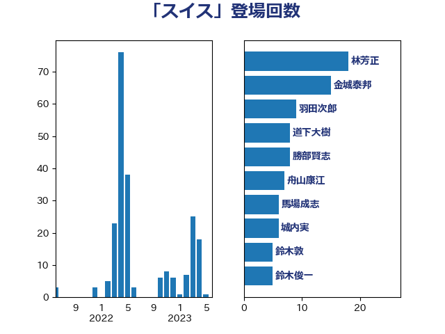

単語「スイス」

| 林芳正 | 自由民主党 | 17 回 |
| 金城泰邦 | 公明党 | 15 回 |
| 羽田次郎 | 立憲民主党 | 8 回 |
| 舟山康江 | 国民民主党 | 8 回 |
| 勝部賢志 | 立憲民主党 | 7 回 |
| 上田清司 | 国民民主党 | 6 回 |
| 城内実 | 自由民主党 | 6 回 |
| 馬場成志 | 自由民主党 | 5 回 |
| 中谷真一 | 自由民主党 | 4 回 |
| 近藤和也 | 立憲民主党 | 4 回 |
| 音喜多駿 | 日本維新の会 | 4 回 |
| 井上哲士 | 日本共産党 | 3 回 |
| 鈴木敦 | 国民民主党 | 3 回 |
| 須藤元気 | 無所属 | 3 回 |
| 伊波洋一 | 無所属 | 2 回 |
| 前原誠司 | 国民民主党 | 2 回 |
| 大塚耕平 | 国民民主党 | 2 回 |
| 大西健介 | 立憲民主党 | 2 回 |
| 太栄志 | 立憲民主党 | 2 回 |
| 安達澄 | 無所属 | 2 回 |
| 寺田静 | 無所属 | 2 回 |
| 川田龍平 | 立憲民主党 | 2 回 |
| 杉本和巳 | 日本維新の会 | 2 回 |
| 杉田水脈 | 自由民主党 | 2 回 |
| 松原仁 | 立憲民主党 | 2 回 |
| 梅村聡 | 日本維新の会 | 2 回 |
| 浅田均 | 日本維新の会 | 2 回 |
| 浜口誠 | 国民民主党 | 2 回 |
| 穀田恵二 | 日本共産党 | 2 回 |
| 細田博之 | 自由民主党 | 2 回 |
| 野上浩太郎 | 自由民主党 | 2 回 |
| 金村龍那 | 日本維新の会 | 2 回 |
| 高橋克法 | 自由民主党 | 2 回 |
| 齋藤健 | 自由民主党 | 2 回 |
| 三木圭恵 | 日本維新の会 | 1 回 |
| 北神圭朗 | 無所属 | 1 回 |
| 吉田統彦 | 立憲民主党 | 1 回 |
| 吉良州司 | 無所属 | 1 回 |
| 塩田博昭 | 公明党 | 1 回 |
| 宮本周司 | 自由民主党 | 1 回 |
| 小泉進次郎 | 自由民主党 | 1 回 |
| 山下芳生 | 日本共産党 | 1 回 |
| 岸田文雄 | 自由民主党 | 1 回 |
| 後藤祐一 | 立憲民主党 | 1 回 |
| 東徹 | 日本維新の会 | 1 回 |
| 松沢成文 | 日本維新の会 | 1 回 |
| 武見敬三 | 自由民主党 | 1 回 |
| 海江田万里 | 立憲民主党 | 1 回 |
| 渡辺周 | 立憲民主党 | 1 回 |
| 田島麻衣子 | 立憲民主党 | 1 回 |
| 田嶋要 | 立憲民主党 | 1 回 |
| 稲富修二 | 立憲民主党 | 1 回 |
| 竹谷とし子 | 公明党 | 1 回 |
| 篠原孝 | 立憲民主党 | 1 回 |
| 茂木敏充 | 自由民主党 | 1 回 |
| 菅義偉 | 自由民主党 | 1 回 |
| 谷田川元 | 立憲民主党 | 1 回 |
| 重徳和彦 | 立憲民主党 | 1 回 |
| 野間健 | 立憲民主党 | 1 回 |
| 鈴木俊一 | 自由民主党 | 1 回 |
| 高良鉄美 | 無所属 | 1 回 |